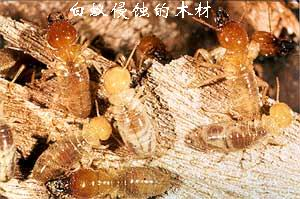

<div class="medium_box">
	<div class="content_box02">
		<div class="newscontent">                    
			<span>一、白蚁危害的特点<p/>1．隐蔽性<p/>白蚁生活在黑暗环境中，筑巢在土中、木头里或在高大的土垅内，修筑隧道活动隐蔽，危害不易使人察觉，一旦发现，损失严重，已无法挽回，所以白蚁是建筑物、水库堤坝的大隐患。<p />2．广泛性<p/>白蚁危害范围十分广泛，涉及到国民经济的许多部门，如房屋建筑、交通设施、电讯设备、江河堤围、水库土坝、档案图书、纺织品、武器弹药、各种农林植物等，人们的衣食住行和各种用具无不遭受其害。<p />3．严重性<p />危害率高，破坏性大；白蚁造成的损失惊人，据资料统计， 在 房 屋 建 筑 方 面， 长 江 流 域 危 害 率 一 般 可 占 房 屋 总 数 的 40%－50%；华南地区危害率可上升到60%－80%，广东可高达90%。据统计，全国2 3个城市仅房屋白蚁造成的损失，每年约800亿人民币，莫尔丁(Mauldin)认为，每年美国房地产业主因白蚁的损失代价为7.5－15亿美元。<p />4．易传播和扩散蔓延<p />白蚁被人引进，由原产地传播到新的国家或地区蔓延危害，已有记录的种类达40 多种，楹白蚁属（Incisitermes）传播其他地区或国家的种类已有7种，散白蚁属（Reticulitermes）有4种。 
			
			</span>
		</div>
	</div>
</div>